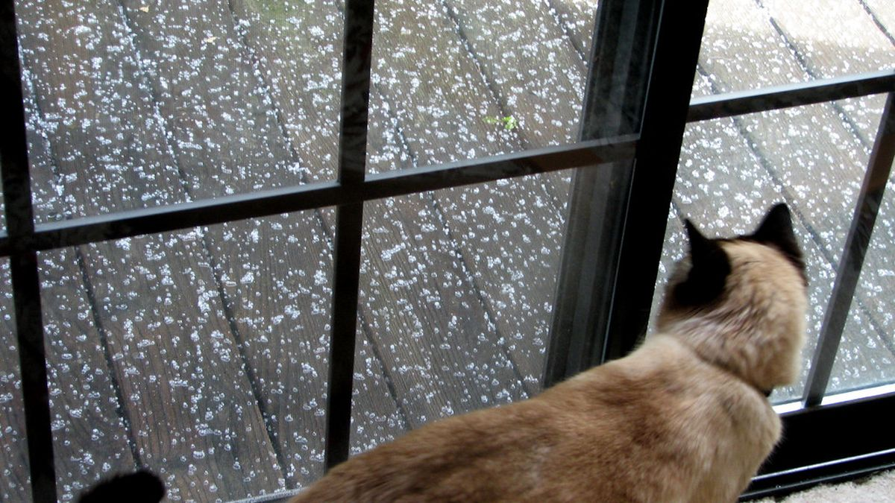
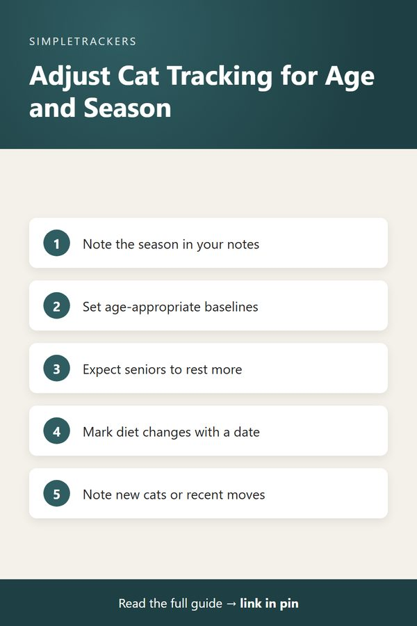

Adjusting What You Track: Seasonal Changes and Life Stages
← Back to the Complete Multi-Cat Household Guide

Key takeaways
- Normal shifts over time: seasons, aging and life stages all change what "normal" looks like for each cat.
- Note the season: a quick line in the Notes column gives you and your vet seasonal context.
- Use age-appropriate baselines: a senior resting more is expected; track changes from their own senior baseline.
- Mark life events with a date: diet changes, new medications, new cats and moves turn your log into a timeline.
- Compare year to year: after twelve months, a short annual summary makes seasonal comparison easy.
Your Cats Change With the Seasons and With Age. Your Tracking Should Too
After a few weeks of tracking, you'll start to see what "normal" looks like for each cat. But normal isn't constant.
As seasons change, as your cats age and as they move through different life stages, normal shifts. A good tracking practice adapts to these shifts rather than treating the baseline from three months ago as the standard forever.
Seasonal Changes: More Than Just Winter Fluff
Most people know cats tend to eat slightly more and grow thicker coats heading into colder months. But seasonal changes affect more than appearance:
- Activity. Indoor cats might become less active in winter, when it's dark more of the day.
- Time outdoors. Cats with outdoor or cat-accessible spaces might spend more time outside in warm months and inside in cold months, changing when and how often you observe them.
- Water intake. In hot months, cats drink more. In cold months, some cats drink less.
- Appetite and sociability. Appetite can shift slightly, and some cats become more social or more solitary depending on the season.
Watch low water intake
Lower drinking in cold months is worth paying attention to, because consistently low water intake can become a concern.
How to adjust your tracking
Rather than comparing a January day to an August day using the same baseline, note the season in your Notes column when relevant, for example "Winter, very dark day" or "Summer, unusually hot." This reminds you and your vet that seasonal context matters.
You might lower your alert threshold for what's "different" in winter, since some changes are normal, while staying attuned to shifts that persist despite seasonal influence. If your cats have variable outdoor access, note that too: "Spent most of day outside" or "Indoor only today (weather)." That context helps you tell changes worth watching from normal seasonal variation.
Life Stages: Kittens, Adults and Senior Cats
A young kitten's needs, behaviors and patterns are completely different from an adult cat's, which are different again from a senior's. Good tracking acknowledges these stages rather than expecting an eight-year-old cat to have the activity level of a two-year-old.
| Life stage | What's typical | How to read changes |
|---|---|---|
| Kittens (under 1 year) | Very active; eat more frequently in smaller portions; enthusiastic appetite; more frequent litter box visits than adults | "High activity" is normal for a kitten. What would be "reduced appetite" in an adult might be normal-to-low for a kitten still learning to eat independently. |
| Adults (1–7 years) | Stable, consistent patterns in activity, eating and bathroom routines | Your baseline serves you best here. A sudden drop in activity or appetite is a more notable change from their established norm. |
| Seniors (7+ years) | Activity typically decreases; sleeping more and moving less is a natural part of aging | Track changes from their adjusted senior baseline. Decreases beyond that baseline might be worth noting. |
Senior cats need closer attention
Senior cats also become more prone to certain conditions. Their appetite, water intake and litter box patterns can become more variable. More frequent bathroom visits, appetite changes or shifts in water intake are more common in older cats, and they warrant closer attention when they deviate even from normal senior patterns.
How to adjust your tracking
When logging a senior cat, note their age or life stage in the Notes column if helpful ("Senior check" or "Senior, age 11"). This reminds you that baseline expectations are age-appropriate, and helps your vet see that an activity level that might be concerning in a three-year-old is normal for a twelve-year-old.

Life Events: Diet Changes, New Cats, Moves and More
Beyond seasons and aging, tracking should adapt to major changes in your household. Your priorities might shift temporarily when something big happens.
| Event | What to watch | Example note |
|---|---|---|
| Starting a new diet | Focus more closely on appetite and stool quality to make sure the transition is smooth | "Week 1 of diet change" |
| Starting a new medication or supplement | The first two weeks warrant closer attention; you might log more often or watch behavior more closely | "Started probiotic August 15" |
| Adding a new cat | Existing cats often shift behavior: more hiding, less activity, different appetite | "New cat introduced August 10" |
| Moving to a new home | Cats often become less active, hide more or change appetite temporarily | "Just moved" or "3 days post-move" |
These notes help you distinguish normal variation, or changes due to household dynamics, from changes worth separate concern. A clear start date also creates a marker so you can compare before and after.
How to adjust your tracking
When major life events happen, write them explicitly in your Notes column: "Starting medication," "New cat," "Moved homes," "Diet change." This turns your tracker from a data collection tool into a timeline that connects observations to real-world context. Your vet will appreciate it when reviewing weeks of entries.
Annual Baselines: Comparing Year to Year
After a year of tracking, you have something powerful: a full year of baseline data for each cat. You can compare August of Year 2 with August of Year 1 and see whether patterns are repeating seasonally or whether something is genuinely different.
Some owners like to write a quick annual summary and keep it with the tracker. For example:
Example annual summary
"Year 1 August baseline: Whiskers typically 4–5 litter box visits daily, appetite normal, activity active daily."
Keep Tracking Simple While Staying Responsive
The key is balance: maintain consistent tracking without getting bogged down in complexity. Your tracker works best as a stable habit you can sustain, while staying responsive to the reality that your cats' needs and patterns change over time.
To build tracking into your routine with a format that's flexible enough to accommodate these shifts, download the Multi-Cat Household Health & Litter Tracker today. It's structured to handle both consistency and change—letting you maintain a stable baseline while adjusting for seasons, life stages, and the real events that shape your cats' lives.